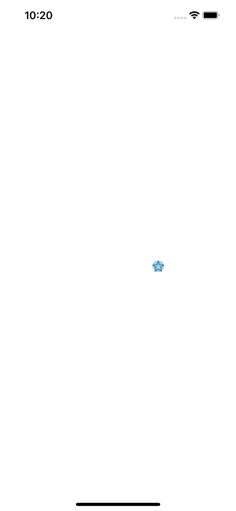
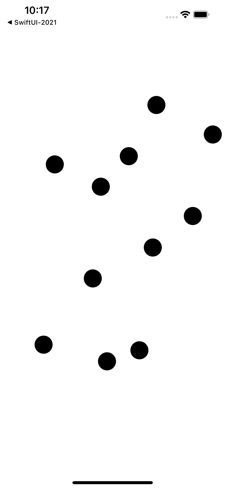

09/06/2021
On WWDC 2021, Apple has released a welcome addition to the SwiftUI framework, Canvas API. Canvas replace drawRect(:_) method from Core Graphics, and allows you to draw advanced graphics in your apps.
Here is an example of a simple animation. First, we use the TimelineView with the .animation property.
Then, we define the Canvas with two closure arguments context and size. We get current time since reference date, compute the angle, and a use the cos function to create oscillation effect. We then use the image of the star. using context.resolve.
Finally we create the frame, set the opacity and use context.fill to create the ellipse of cyan colour and draw the image in our frame using context.draw.
struct AnimationView: View {
var body: some View {
TimelineView(.animation){ timeline in
Canvas { context, size in
let now = timeline.date.timeIntervalSinceReferenceDate
let angle = Angle.degrees(now.remainder(dividingBy: 3) * 120)
let x = cos(angle.radians)
let image = context.resolve(Image(systemName: "star"))
let imageSize = image.size
let frame = CGRect(x: 0.5 * size.width + Double(3) * imageSize.width * x,
y: 0.5 * size.height,
width: imageSize.width,
height: imageSize.height)
context.opacity = 0.5
context.fill(Ellipse().path(in: frame), with: .color(.cyan))
context.draw(image, in: frame)
}
}
}
}

In the second example, we create an array of locations. Then, we loop through the locations, define the point, and draw it in each location.
Then use the DragGesture() with minimumDistance of 0, to append current location of the touch to locations array.
When you tap the screen, a small black circle appears at the position of your finger.
struct TouchCanvas: View {
@State var locations = [CGPoint]()
var body: some View {
Canvas { context, size in
for loc in locations {
let point = CGRect(x: loc.x, y: loc.y, width: 30, height: 30)
context.fill(Ellipse().path(in: point), with: .foreground)
}
}.gesture(DragGesture(minimumDistance: 0).onEnded { val in
locations.append(val.startLocation)
})
}
}

Thanks for reading, and enjoy the rest of WWDC 2021!